01
Communication
& storytelling
Connecting ideas and people through clear, considered communication.
- Public Relations
- Content Writing
- Creative Writing
- Communication
PUBLIC RELATIONS & MEDIA MANAGEMENT
Thoughtful words.
Meaningful connections.
An undergraduate at the University of Kelaniya, exploring the intersection of public relations, creative storytelling and strategic communication.
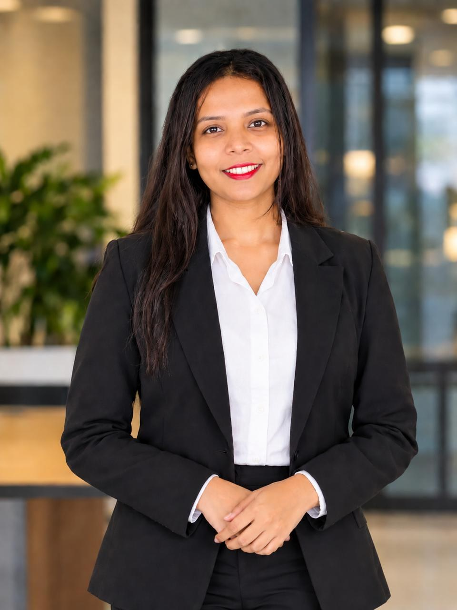
I am an undergraduate specializing in Public Relations and Media Management at the University of Kelaniya.
My interests bring together the creative and strategic sides of communication—from finding the right words to understanding how messages connect with people. I am particularly drawn to public relations, creative writing, media management, digital communication and strategic communication.
02 / SKILLS & INTERESTS
The skills I bring to my work,
and the areas I’m excited to explore.
Connecting ideas and people through clear, considered communication.
Bringing care, collaboration and responsibility to shared work.
Supporting content creation and everyday digital communication.
03 / PROFESSIONAL EXPERIENCE
Putting creative communication into practice.
HARDTALK (PVT) LTD
I am gaining professional experience as a Creative Writer at HardTalk (Pvt) Ltd. This internship brings my interest in writing and communication into a professional public relations environment.
View my professional profile (opens in a new tab)04 / SELECTED WORK
Creative writing, strategic campaigns
and promotional communication.
පවුල් කන
මිනිහෙක්
STAGE DRAMA PROMOTION
Caption writing · Campaign team · Sponsorship coordination
Contributed to the stage drama’s promotional campaign through caption writing and campaign teamwork. Led sponsorship coordination for the tea brand partnership.
CONTENT WRITING
Official PR & Media Management Facebook page
Created special-day captions for the programme’s official Facebook page. The selected English and Sinhala examples credit my caption writing for Independence Day and Medin Poya.
A supporting presentation document from my project collection.
05 / CAMPUS & COMMUNITY
Divided into Department Contributions and University Contributions,
reflecting active involvement and leadership throughout my academic journey.
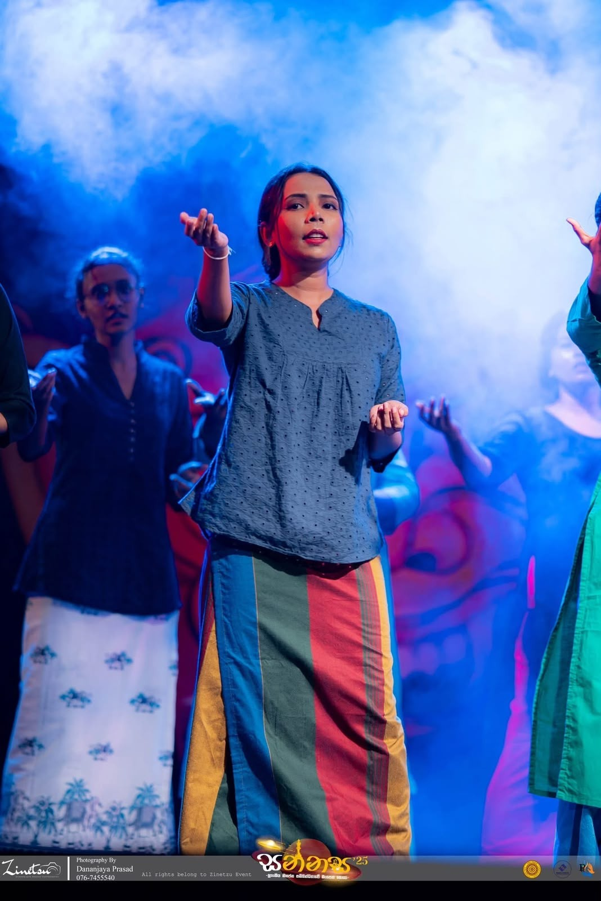
Role: Script Writing | Performing | Event Management
A cultural celebration organized to mark the 10th Anniversary of the PR & Media Management Degree Programme at the University of Kelaniya. Contributed to developing the event script, participating in performances, and supporting the planning and coordination of the event to ensure its smooth execution.
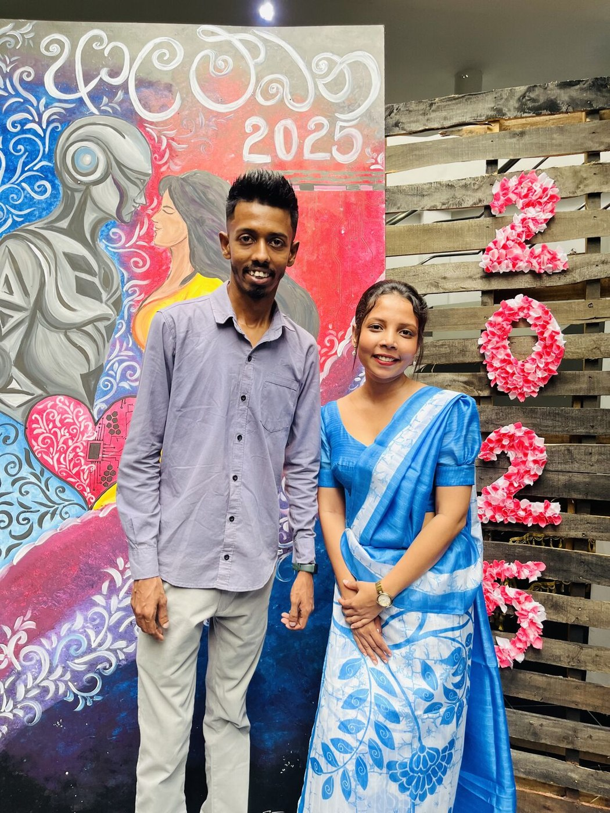
Role: Documentation Team · PRMM Special 1st Year
Drafted official letters, wrote captions and prepared the proposal for the photography exhibition organized by PRMM Special first-year students.
View LinkedIn post (opens in a new tab)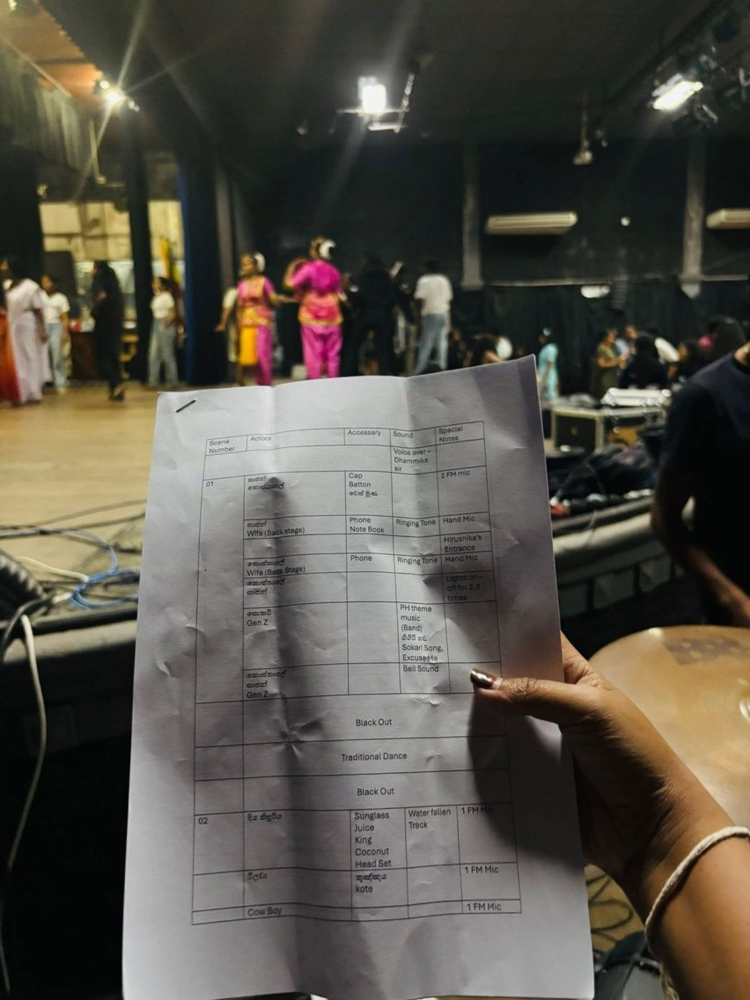
Role: Script Writing & Event Management (2026) · Documentation (2025)
Contributed to script writing and event management for the 2026 event. At the 2025 edition, supported the documentation team in recording the creative and cultural celebration.
Role: Documentation Team · Musical Performance
Contributed to the documentation team and participated in a musical item at the Department of Mass Communication’s annual Sinhala & Tamil New Year celebration.
View LinkedIn post (opens in a new tab)Role: Workshop Participant · 2025
Participated in the university workshop organized by the PR & Media Management Students’ Association, exploring modern artificial intelligence tools and future career skills.
View LinkedIn post (opens in a new tab)Role: Promotional Video Participant & Department Representative
Participated in the promotional video for Sanjanani 2025 and represented the department as an undergraduate at Sanjanani 2026 & Harasara Awarding Ceremony.
View LinkedIn post (opens in a new tab)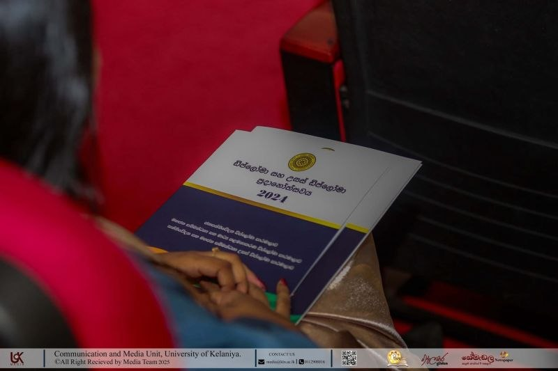
Role: Event Volunteer · 27 July 2025
Supported registration, guest coordination and seating at the Department of Mass Communication’s awarding ceremony.
View LinkedIn post (opens in a new tab)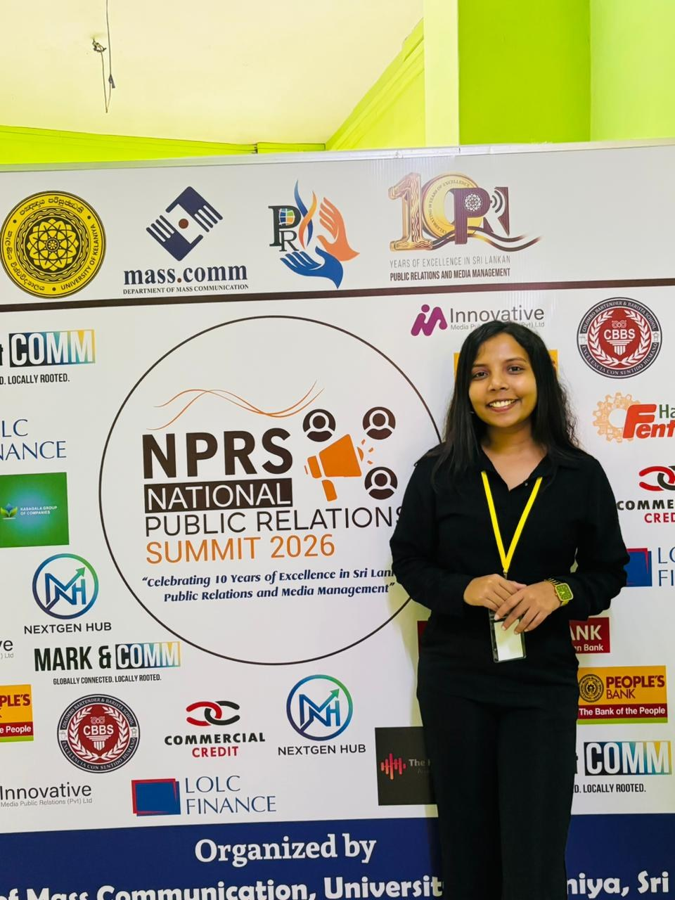
NPRS · 2026I was honoured to serve as an Official Minute Taker at the National Public Relations Summit (NPRS) 2026—a platform bringing together PR practitioners, academics and young communicators.
Capturing key insights, meaningful discussions and important perspectives strengthened my appreciation for accuracy, communication and professional responsibility.
“Grateful for the opportunity and for every lesson gained along the way.”
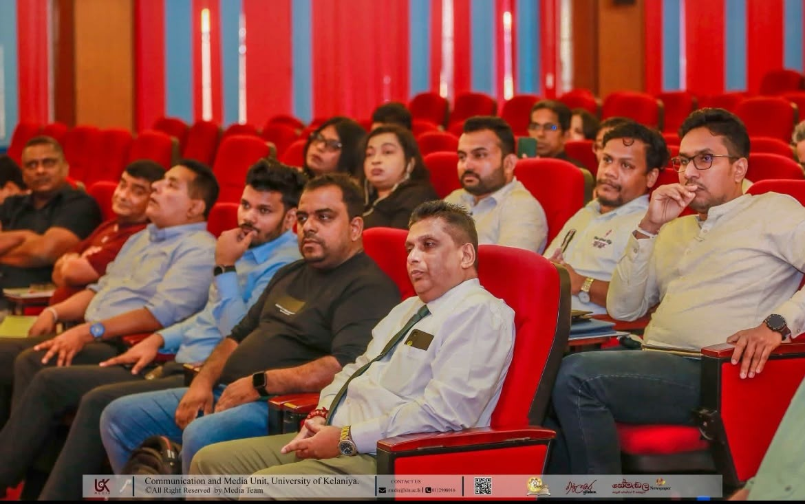
Official Minutes Taker
Served as the Official Minutes Taker for the special discussion on the proposed Bill to establish the Chartered Institute of Media Professionals of Sri Lanka.
The discussion brought together media professionals, journalists, academics, policymakers and university students. I contributed through accurate documentation and communication support.
Venue Auditorium, Faculty of Social Sciences, University of Kelaniya
Role: Vice Secretary · Project Coordinator
Serving on the club’s executive board as Vice Secretary and coordinated the Pen2Purpose initiative, collecting used pens for recycling and raising awareness of waste reduction across the university.
View LinkedIn post (opens in a new tab)Role: Manager — Content Writing · Project Volunteer
Serving on the executive board as Manager of Content Writing, bringing purposeful writing to student initiatives, and contributed to Project Kunjanada 2025.
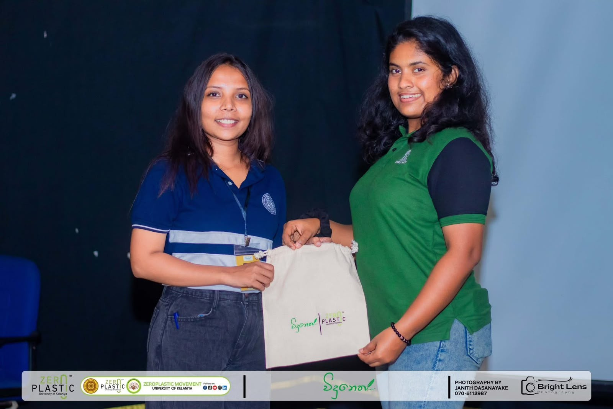
Role: Project Contribution
Contributed to Project විදුනෙත් as part of student-led community and educational outreach initiatives at the University of Kelaniya.
Role: University Events Team · PFEC Global / Good PR
Volunteered with University of Kelaniya students and Good PR at World Study Fair 2025, and supported the event team for the 3rd YKK ASAO Kids Football Clinic in partnership with the Real Madrid Foundation.
Role: Conference & Training Participant · 2025
Attended the workshop on multidisciplinary approaches to ethical reporting on child protection at ICCP 2025 (Centre for Gender Studies, University of Kelaniya) and participated in the MISP emergency reproductive health training by FPA Sri Lanka.
06 / IN FOCUS
A closer look at the summit.
Select a photograph to explore.
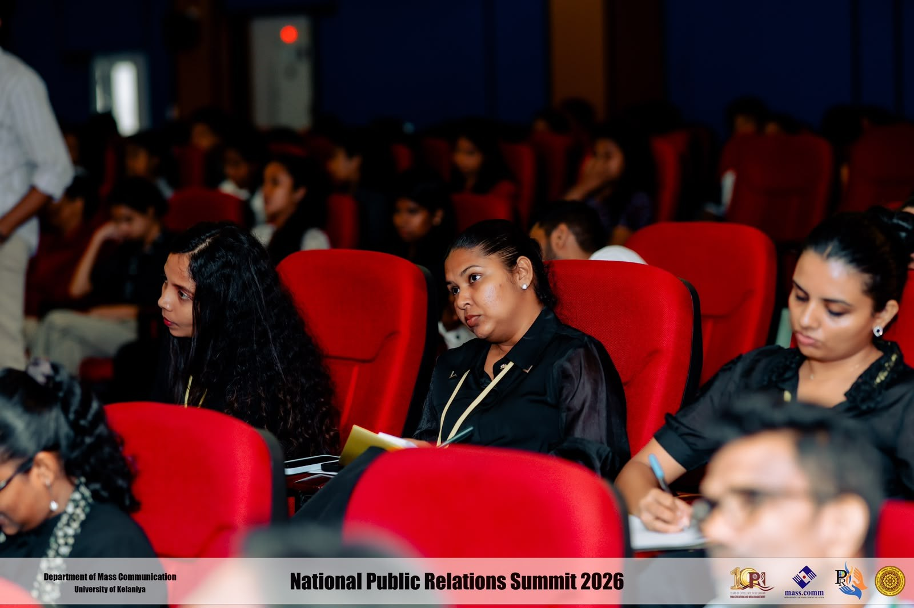
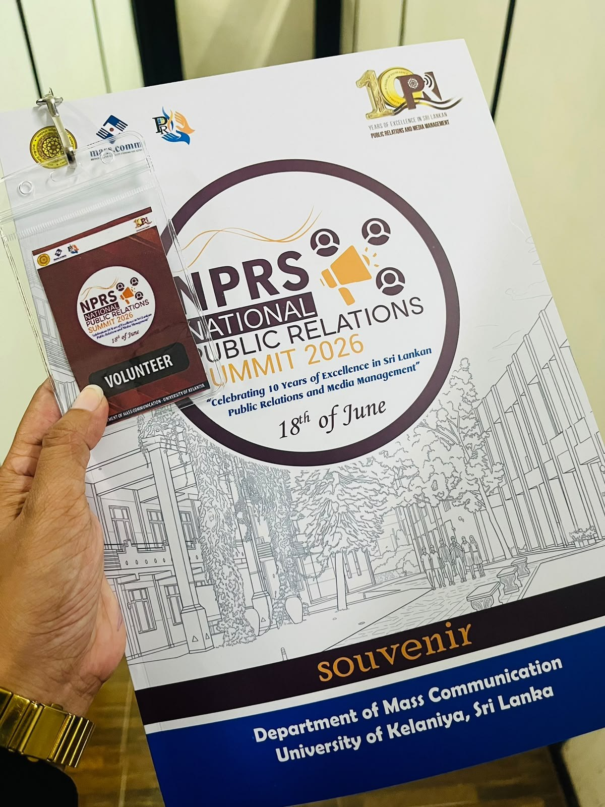
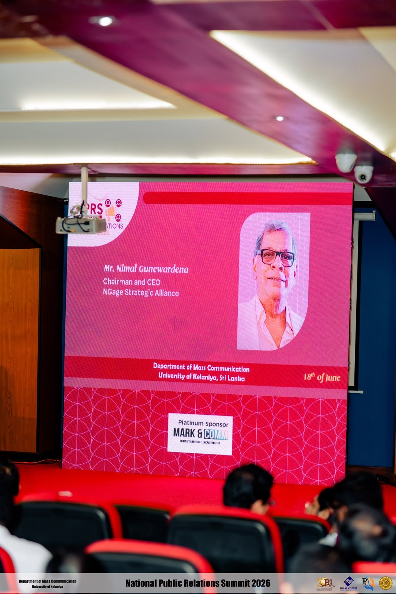
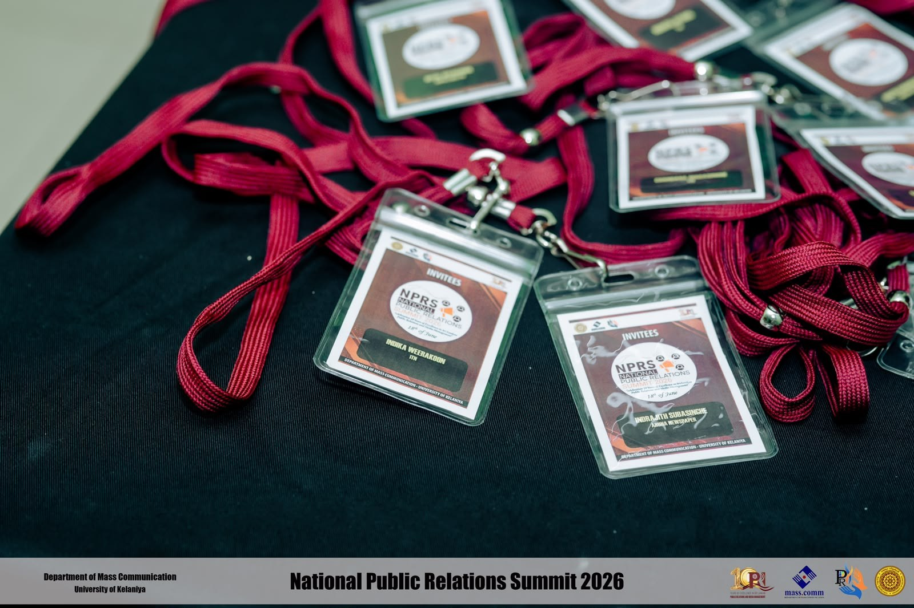
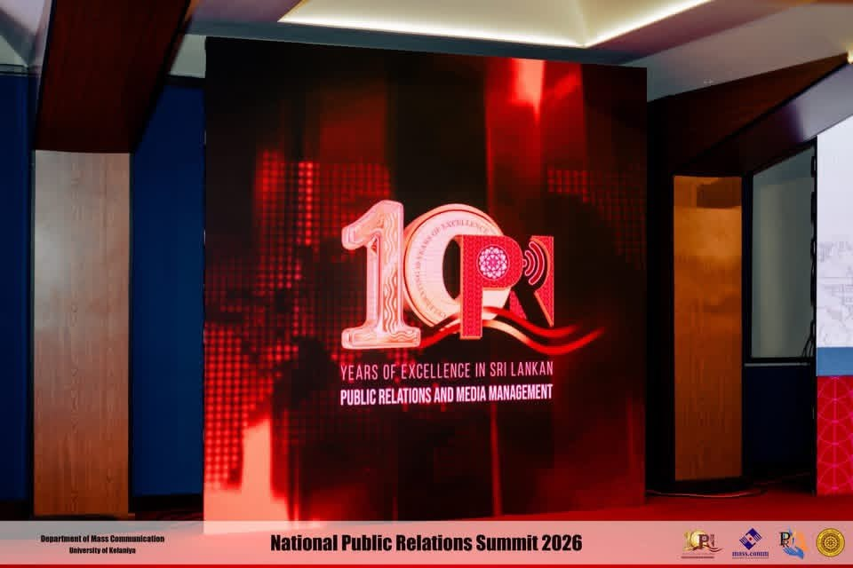
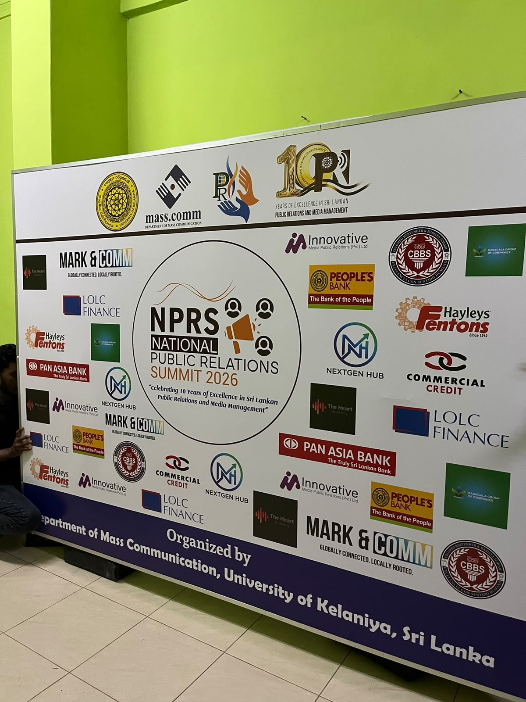
07 / LET’S CONNECT
Let’s connect over public relations, writing,
media and meaningful ideas.